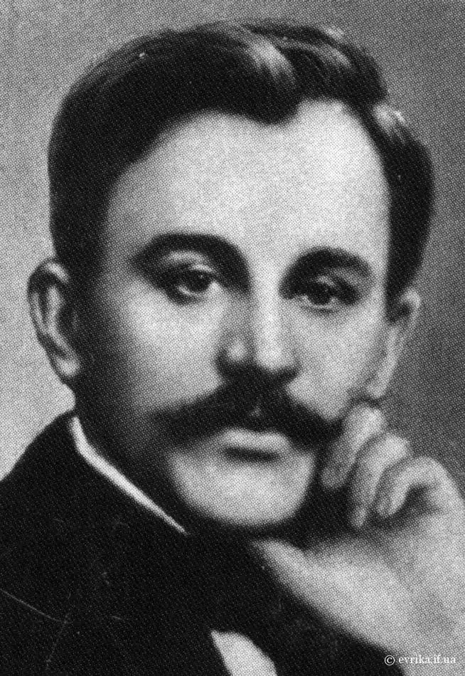
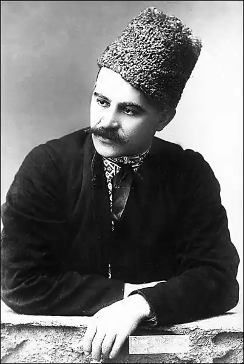
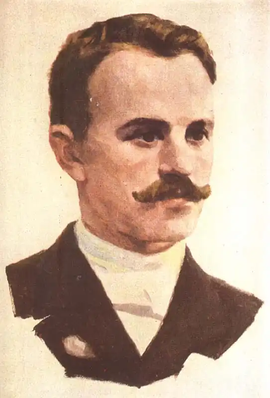
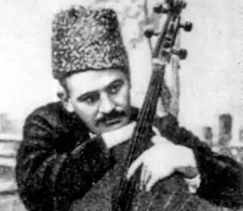

Народився 31.12.1877 р. в Харкові, де минула більша частина його життя. У 1900 р. закінчив місцевий технологічний інститут. Уже в студентські роки зайнявся культурно-освітньою діяльністю на селі, опанувавши гру на бандурі. Коли став контактувати з членами Української соціал-демократичної партії, це викликало підозри властей, у 1899-му його на рік виключили з інституту.
У 1905 р. взяв активну участь у революційних подіях, відтак змушений був емігрувати до Галичини. Подорожуючи Галичиною і Буковиною, виступав як бандурист та популяризував українські пісні і думи. На Гуцульщині, у с. Красноїлові, 1909 р. організував перший драматичний гурток, який згодом став Гуцульським театром. Г. Хоткевич був режисером, писав для театру етнографічні п'єси. Протягом 1909–1912 рр. театр побував з виставами на гастролях у Чернівцях, Львові і Польщі. У цей час Хоткевич також написав роман "Камінна душа", п'єсу "Довбуш", зібрав матеріал для роману "Довбуш".
Коли він у 1912 р. повернувся до Києва, його відразу арештували. Звільнили письменника наприкінці цього ж року, і він знову включився в культурне і літературне життя. У березні 1915 р. поліція вислала Г. Хоткевича як політично неблагонадійного за межі України до Білгорода Курської губернії, а згодом до Воронежа, де він перебував до лютневої революції 1917 р. У 1921–1928 рр. Г. Хоткевич викладав українську літературу в Дергачівському зоотехнікумі на Харківщині, а з 1926 до 1928-го керував курсом бандури при Харківському музично-драматичному інституті. У 1928–1931 рр. вийшли його "Твори" у восьми томах, а в 1930-му – дослідження "Музичні інструменти українського народу" та "Підручник гри на бандурі", крім того він написав понад 180 музичних творів. На початку 1930-х Хоткевича починають переслідувати, забороняють його твори, він стає безробітним. У 1934 р. він потрапив під поїзд і став інвалідом, але в пенсії йому відмовили, родину позбавили права на хлібні картки. У розпачі письменник пише листи до харківських властей, Академії наук України і навіть до Сталіна: "Як мені далі жити? Мене позбавили праці і хлібних карток. Ми голодуємо. Я спроможний купити лише один кухоль квасолі на день, із якої варимо на всіх юшку… На двох дітей маємо тільки одну пару чобіт, а їм же треба ходити до школи… В нас нічим топити… Вода в хаті замерзає…" Але йому ніхто не допоміг, а 23.02.1938 р. його арештували. У постанові 3.03.1938 р. Г. Хоткевича звинуватили у тому, що "він є учасником контрреволюційної української повстанської організації і агентом німецької розвідки, протягом тривалого часу проводив активну контрреволюційну націоналістичну організаційну і шпигунську діяльність". Не витримавши тривалих нічних допитів і тортур, письменник підписав зізнання у "злочинах". 29.09.1938 р. Особлива трійка УНКВС по Харківській області постановила: обвинуваченого розстріляти, а особисте майно конфіскувати. Вирок виконано 8.10.1938 р. Окремі твори Г. Хоткевича піддавалися за життя жорстокій критиці, ба навіть його звинувачували у порнографії, а в наш час цих творів просто не друкували.